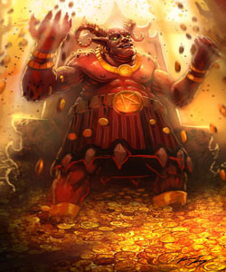

Mammon

Pernahkah anda menonton film Constantine, mungkin anda masih ingat tentang Iblis Mammon sebagai anak dari Lucifer. Ya, hal itu tidak salah, beberapa versi mengatakan bahwa Mammon adalah anak dari Satan yang merupakan salah satu dari 7 pangeran neraka dengan simbol keserakahan dan kekayaan (greed). Mammon sering diasosiasikan dengan wujud Iblis yang sangat rakus dengan uang, kaya dan juga pelit. Ia akan menambah kekayaannya dengan merampas kekayaan para penyembahnya. Uniknya, kata ‘Mammon’ di istilah non-formal Jerman, memiliki arti kata uang.